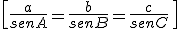
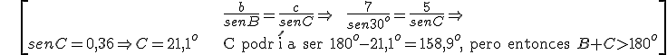

TEOREMA DEL SENO: las longitudes de los lados de un triángulo son proporcionales a los senos de sus ángulos opuestos:

\[\frac{a}{senA}=\frac{b}{senB}=\frac{c}{senC}\ \ \]
Ejemplo: c = 5 cm, b = 7 cm, B= 30o. Calcula C.

\[\begin{align} & \frac{b}{senB}=\frac{c}{senC}\Rightarrow \ \ \frac{7}{sen{{30}^{o}}}=\frac{5}{senC}\Rightarrow \\ & senC=0,36\Rightarrow C={{21,1}^{o}}\text{ C podr }\!\!\acute{\mathrm{i}}\!\!\text{ a ser 18}{{\text{0}}^{o}}-{{21,1}^{o}}={{158,9}^{o}},\text{ pero entonces }B+C>{{180}^{o}} \\ \end{align}\]
Ejercicio. Calcula a, sabiendo que b = 7,5 cm, A = 68o y B = 87o.
Solución: a = 6,96 cm